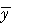
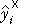
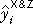
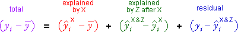
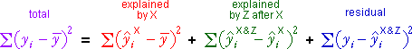
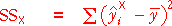
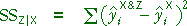
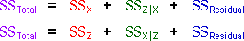

Components and sums of squares for Y vs X and Z
In an earlier section, we showed that the differences between the response values and their mean can be split into two components,

The sums of squares of these components satisfy a similar relationship,

Sequential components and sums of squares
We now consider how the fit of the model improves when we add the two explanatory variables in the order X and then Z. Using the notation
|  | mean response (fitted value for model with no explanatory variables) |
|  | fitted value for model with only X |
|  | fitted value for model with both X and Z |
we can split the total component into three parts,

Provided the models are all fitted by least squares, the sums of squares of the components satisfy a similar relationship,

Interpreting the sums of squares
| The total variability of the response. | |
|  | The response variability that is explained by X. |
|  | The extra response variability that is explained by adding Z to the model that already contains X. |
| The variability in the response that is unexplained by the model with both X and Z. |
Different order of adding variables
There are two different orders of adding the explanatory variables to the model, so there are two different ways to define the components and their sums of squares. The total sum of squares can therefore be written in two alternative ways:

Note that the green sums of squares summarise the effect of adding the variables to the model that already has the other variable, so they may differ from the red sums of squares.
Body fat
The diagram below shows the percentage body fat, abdomen circumference and height of 25 men.
Use the Component pop-up menu on the top right to display the four components corresponding to adding the variables in the order abdomen (X) then height (Z). The components themselves are shown in a jittered dot plot on the right and their sizes are summarised by the sums of squares at the bottom.
Note that the sums of squares explained by X and by Z after X both summarise the 'distance between' two least squares planes.
Use the Order pop-up menu on the top left to change the order of adding the variables. Observe that the components (and their sums of squares) explained by Z and by X after Z are different from those from the other ordering — they refer to the distances between different least squares planes.